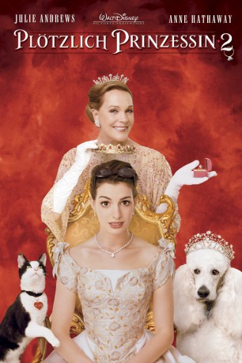

gesehen am 30.08.2016
gesehen am 30.08.2016Alternativ: The Princess Diaries 2: Royal Engagement gesehen am 30.08.2016
 
 IMDB-Wertung: 5.8 / 10
IMDB-Wertung: 5.8 / 10  Metascore:
Metascore: 
Der amerikanische Teenager Mia Thermopolis hat für fünf Jahren erfahren, dass sie eine europäische Prinzessin ist. Nun hat sie ihren College-Abschluss in der Tasche und ist bereit, ihr Amt in der kleinen europäischen Monarchie Genovien anzutreten. Kaum dort angekommen, muss sie jedoch erfahren, dass ihr ein Adelsvertreter versucht, die Krone streitig zu machen. Außerdem sieht ein genovisches Gesetz vor, dass die Thronanwärterin verheiratet sein muss, um Königin zu werden. Also muss Mia innerhalb von 30 Tagen einen adäquaten Bräutigam auftreiben.
Jahr: 2004
Dauer: 113 Minuten
FSK: 0
Land: USA Studio: Buena Vista PicturesTonspuren: DTS - ,
Untertitel: Deutsch,
Auflösung: 1080p (1920x1080) Größe: 8140 MB
Genre: Komödie, Familie, Liebe
Regisseur:  Garry Marshall
Garry Marshall
Drehbuch: Meg Cabot, Gina Wendkos, Shonda Rhimes, Shonda Rhimes
Soundtrack: John Debney
Darsteller:
 Anne Hathaway als Mia Thermopolis
Anne Hathaway als Mia Thermopolis Julie Andrews als Queen Clarisse Renaldi
Julie Andrews als Queen Clarisse Renaldi Hector Elizondo als Joe
Hector Elizondo als Joe John Rhys-Davies als Viscount Mabrey
John Rhys-Davies als Viscount Mabrey Heather Matarazzo als Lilly Moscovitz
Heather Matarazzo als Lilly Moscovitz Chris Pine als Nicholas Devereaux
Chris Pine als Nicholas Devereaux Joel McCrary als Prime Minister Motaz
Joel McCrary als Prime Minister Motaz Raven-Symoné als Asana
Raven-Symoné als Asana Larry Miller als Paolo
Larry Miller als Paolo Caroline Goodall als Mia's Mom Helen
Caroline Goodall als Mia's Mom Helen Sean O'Bryan als Mia's Stepfather Patrick
Sean O'Bryan als Mia's Stepfather Patrick Spencer Breslin als Prince Jacques Dubé
Spencer Breslin als Prince Jacques Dubé Shannon Wilcox als Lady Salsa
Shannon Wilcox als Lady Salsa Jane Morris als Mabrey's Servant Gretchen
Jane Morris als Mabrey's Servant Gretchen Tracy Reiner als Lady Anthony
Tracy Reiner als Lady Anthony Paul Williams als Lord Harmony
Paul Williams als Lord Harmony Greg Lewis als Baron Siegfried von Troken
Greg Lewis als Baron Siegfried von Troken Bonnie Aarons als Baroness Joy von Troken
Bonnie Aarons als Baroness Joy von Troken Sandra Taylor als Reporter Suki Sanchez
Sandra Taylor als Reporter Suki SanchezDatei: X:\2-Dilogie(N-Z)\Plötzlich Prinzessin\Plötzlich Prinzessin 2 (2004, FSKo.Al., 1920x1080).mkv seit 24.07.2015
Festplatte: HD Collection-2(A-Z)-3(A-M)
 Alle Filme aus Gruppe '2-Dilogie(N-Z)\Plötzlich Prinzessin'
Alle Filme aus Gruppe '2-Dilogie(N-Z)\Plötzlich Prinzessin'